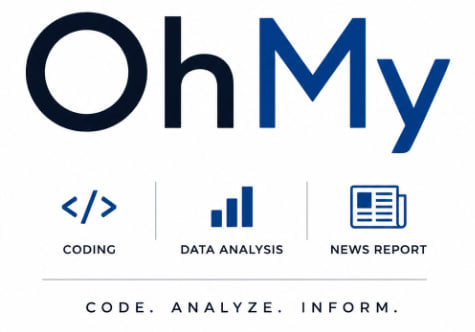

Senior Data Scientist
Nearly two decades building and validating statistical models at CDC and NIOSH. Now building detection, credit-scoring and agentic AI systems at OhMyCode LLC on AWS, Snowflake and Databricks.

60초 소개 영상 — 4만 번의 시뮬레이션으로 2026 중간선거를 예측합니다
Production applications built and operated by OhMyCode LLC — click any card to try it live.
Bilingual (EN/KR) U.S. election analytics — turnout, vote share, swing, margin and recount views, plus a Monte Carlo Senate forecast with uncertainty bands.
Bilingual (KR/EN) analytics for Korea's 18th–21st presidential elections — vote share, swing and turnout across all 17 regions, 2012–2025.
Investment dashboard visualizing markets and economic indicators with risk flags — Monte Carlo VaR, regime detection and FOMC stress tests.
Educational demo: LLM-generated reports with automated number verification and hands-on exercises.
Senior Data Scientist with a Doctor of Science degree and nearly two decades transforming complex healthcare data into actionable insights at CDC and NIOSH, now applied to detection, scoring and agentic AI at OhMyCode LLC.
Bridging technical analysis and executive decision-making—translating statistical results into recommendations leadership can act on.
Detection and scoring systems, healthcare analytics, RAG systems and AI agents
RAG pipeline: PDF ingestion into ChromaDB, hybrid BM25 + dense search with Reciprocal Rank Fusion, FastAPI backend, RAGAS evaluation on a synthetic golden dataset. Deployed via Docker / Cloud Run.
Autonomous LLM agent that plans multi-step research tasks, queries web sources, synthesizes findings, and generates structured reports with citations.
Automated pipeline to transcribe, summarize, and surface insights from HK podcast episodes using speech-to-text and LLM summarization, enabling searchable audio knowledge bases.
End-to-end scoring pipeline with reject inference implemented three ways and scored against ground truth. Found and fixed four deployed defects, including a calibration bug that moved scores 45.6 points.
Python port of a CDC production R/SAS pipeline: six-source weekly merge, change-point alert kept distinct from a magnitude threshold, completeness and cross-source reconciliation checks.
Local AI coding agent with Splunk cost, latency and DLP observability; detected anomalies trigger self-healing model-router re-weighting. 6th place, Splunk Dashboard Contest 2026.
AWS-hosted MCP server exposing regime detection, Monte Carlo VaR and FOMC stress tests to Amazon Alexa+, backed by a 14-tab Streamlit dashboard.
Rule engine for ICD-10→HCC mapping and NDC drug-interaction checks, paired with a tool-calling agent that acts on rule outputs.
Multi-provider LLM layer on AWS Bedrock (Nova Pro, Converse API) and Gemini, with head-to-head scoring of latency and output quality on identical prompts.
Predictive models and NLP for CDC surveillance data
Entity extraction using Spark NLP
Propensity score models for policy analysis
CI/CD for reproducible ML workflows
2025–Present
OhMyCode LLC
Detection and alerting pipelines, credit scoring with calibration QA, and agentic AI on AWS, Snowflake and Databricks.
2022–2025
CDC (DNI Contractor)
Lead predictive and causal models. Advanced NLP analyses.
2019–2022
CDC (Goldbelt, TJFACT)
NVDRS and COVID-19 surveillance analytics.
2008–2017
CDC, NIOSH
Cost-effectiveness modeling for prevention programs.
2014–2020
Georgia Southern University
Biostatistics and epidemiological modeling research.
"A cross-sectional study of teens' health skills that were enhanced through school health education and their associations with mental health-related outcomes" – Health Education & Behavior
Accepted · forthcoming 2026
"Adolescent and Parent Perspectives on Sexual and Reproductive Health Information: A Cross-Sectional Study of Perceived Usefulness and Comfort" – Journal of Adolescent Health
Accepted · forthcoming 2026
"Evaluation of the Reliability and Validity of the Perceptions of Skills Enhanced Through School Health Education (PSE-SHE) Measure" – Journal of School Health
doi.org/10.1111/josh.70038
"Updated assessment of occupational safety and health hazards of climate change" – Journal of Occupational and Environmental Hygiene, 20(5–6):183–206
doi.org/10.1080/15459624.2023.2205468
"Maternal exposure to air pollution and risk of Autism in children: A systematic review and meta-analyses" – Environmental Pollution
doi.org/10.1016/j.envpol.2019.113307
JNC TV is a non-profit Korean-American civic media organization based in CA. In addition to community journalism, JNC TV operates a non-commercial civic data research program that turns official public records — national health-survey data and election records — into verified, reproducible, bilingual (Korean–English) public resources for the Korean-American community and the wider public.
All research conducted under this program is non-commercial. Data, code, and findings are published openly, and every published figure is independently verified against its source records before release.
Principal Investigator / Scientific Lead
Dr. Chun leads the design, analysis, and verification of all research conducted under JNC TV's civic data research program. She was a survey statistician and senior data scientist in health analytics at the U.S. Centers for Disease Control and Prevention (CDC), specializing in complex survey design and weighting, trend analysis, and reproducible statistical pipelines. Her current work includes a re-analysis of U.S. Youth Risk Behavior Survey (YRBS) microdata, 2015–2025, and the statistical validation of official election tally records.
Contact: tcgyver@jnctv.com
Research Engineer / Data Product Lead
Sechan Tak is a member of the JNC TV staff and builds the data products and content pipelines for the research program, including interactive dashboards and weekly public-data monitoring reports. He is a graduate of Vanderbilt University (Political Science and Economics, Computer Science minor).
Research Collaborator
Dr. Song, a research scientist at Vanderbilt University, collaborates with the program on election-data research, including the bilingual Electoral Insights Hub, an open analytics platform for Korean and U.S. election data.
A fully reproducible re-analysis of public CDC Youth Risk Behavior Survey (YRBS) microdata examining whether the post-2021 improvement in adolescent mental health and risk behaviors reached all sex and racial/ethnic groups. Outputs: peer-reviewed manuscripts and public bilingual summaries.
Digitization and statistical validation of 18,949 official Korean ballot tally sheets, linked to precinct-level analysis, together with a calibrated Monte Carlo forecasting model for the 2026 U.S. midterm elections (40,000 correlated-error simulations, with all inputs sourced and reproducible). Outputs: open datasets, an open bilingual dashboard, and a conference paper.
A weekly, openly published monitoring of public political messaging and large-language-model behavior, built and maintained by the research team as a public record for journalists and researchers.
Contact — Civic Data Research Program, JNC TV, USA · tcgyver@jnctv.com
JNC TV는 CA 캘리포니아주에 기반을 둔 비영리 한인 시민 미디어 기관입니다. JNC TV는 커뮤니티 저널리즘과 함께, 국가 보건조사 자료와 선거 기록 등 공식 공공기록을 검증 가능하고 재현 가능한 한·영 이중언어 공공 자료로 만드는 비상업 시민 데이터 연구 프로그램을 운영합니다.
이 프로그램의 모든 연구는 비상업적으로 수행됩니다. 데이터와 코드, 연구 결과는 공개를 원칙으로 하며, 발표되는 모든 수치는 원본 기록과 대조해 독립적으로 검증한 뒤 공개합니다.
연구책임자 / 과학 총괄
전희경 박사는 JNC TV 시민 데이터 연구 프로그램의 모든 연구의 설계·분석·검증을 총괄합니다. 미국 질병통제예방센터(CDC)에서 보건 분석을 수행한 조사통계학자이자 수석 데이터 사이언티스트로, 복합표본 설계와 가중, 추세 분석, 재현 가능한 통계 파이프라인이 전문 분야입니다. 현재 미국 청소년위험행동조사(YRBS) 2015–2025 미시자료 재분석과 공식 선거 개표 기록의 통계적 검증을 수행하고 있습니다.
연락처: tcgyver@jnctv.com
리서치 엔지니어 / 데이터 프로덕트 총괄
탁세찬은 JNC TV 스태프로, 인터랙티브 대시보드와 주간 공공데이터 모니터링 리포트 등 연구 프로그램의 데이터 제품과 콘텐츠 파이프라인을 구축합니다. 밴더빌트대학교 졸업(정치학·경제학, 컴퓨터과학 부전공).
연구 협력자
송현 박사는 밴더빌트대학교 연구 사이언티스트로, 한·미 선거 데이터 개방형 분석 플랫폼인 Electoral Insights Hub를 포함한 선거 데이터 연구에서 본 프로그램과 협력합니다.
CDC 청소년위험행동조사(YRBS) 공개 미시자료를 전면 재현 가능하게 재분석해, 2021년 이후 청소년 정신건강과 위험행동의 개선이 성과 인종·민족 모든 집단에 도달했는지를 검증합니다. 성과물: 동료심사 논문과 한·영 공개 요약.
한국 공식 개표현황표 18,949장의 디지털화와 통계적 검증, 투표구 단위 분석 연계, 그리고 2026년 미국 중간선거를 위한 보정된 몬테카를로 예측 모형(상관오차 시뮬레이션 40,000회, 모든 입력값 출처 명시·재현 가능). 성과물: 공개 데이터셋, 한·영 공개 대시보드, 학회 논문.
연구팀이 구축·유지하는 정치 메시지와 거대언어모델 행동에 대한 주간 공개 모니터링으로, 언론인과 연구자를 위한 공공 기록으로 발행합니다.
연락처: JNC TV 시민 데이터 연구 프로그램, 미국 · tcgyver@jnctv.com
Send me a message or reach out via social links.
Senior Data Scientist | Healthcare | NLP | MLOps
hkchun18@gmail.com
Nearly two decades building and validating predictive, causal and detection models on large real-world data. Azure/Databricks, Snowflake, AWS, NLP, MLOps and agentic AI.
Data Scientist – OhMyCode LLC (2025–Present)
Statistician / Data Scientist – CDC (2022–2025)
Data Analyst – CDC (2019–2022)
Economist / Health Scientist – CDC (2008–2017)
Sc.D., Work Environment Policy – UMass Lowell
M.A., Economics – Boston University
Python, PySpark, SQL, R, SAS, XGBoost, HuggingFace, Spark NLP, Azure ML, Databricks, Snowflake, AWS Bedrock, Power BI, MLflow
Azure AI-900, DP-900, AZ-900